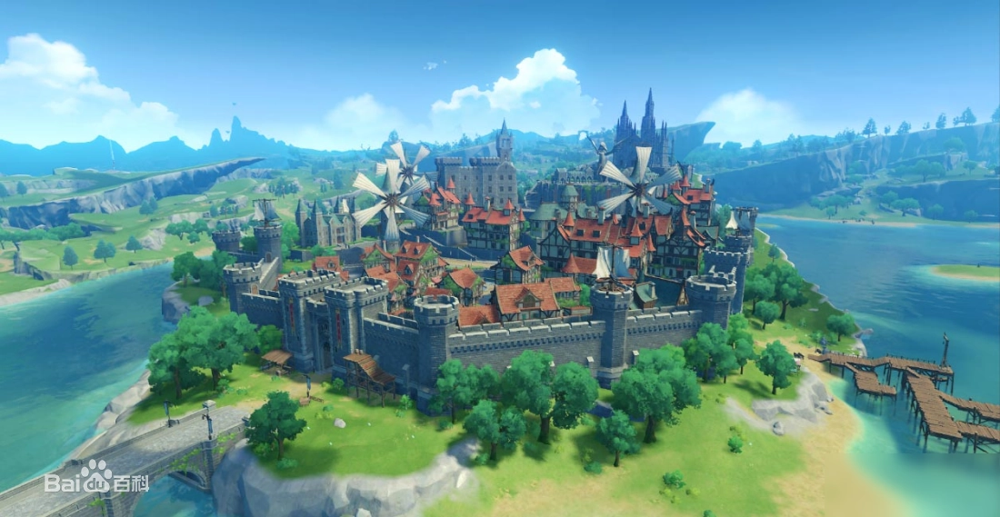
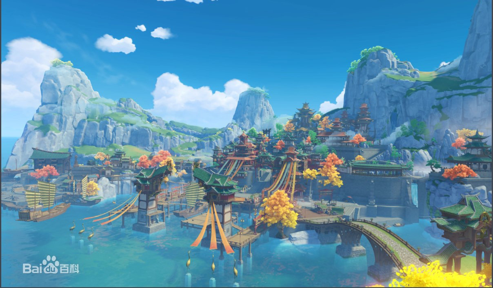
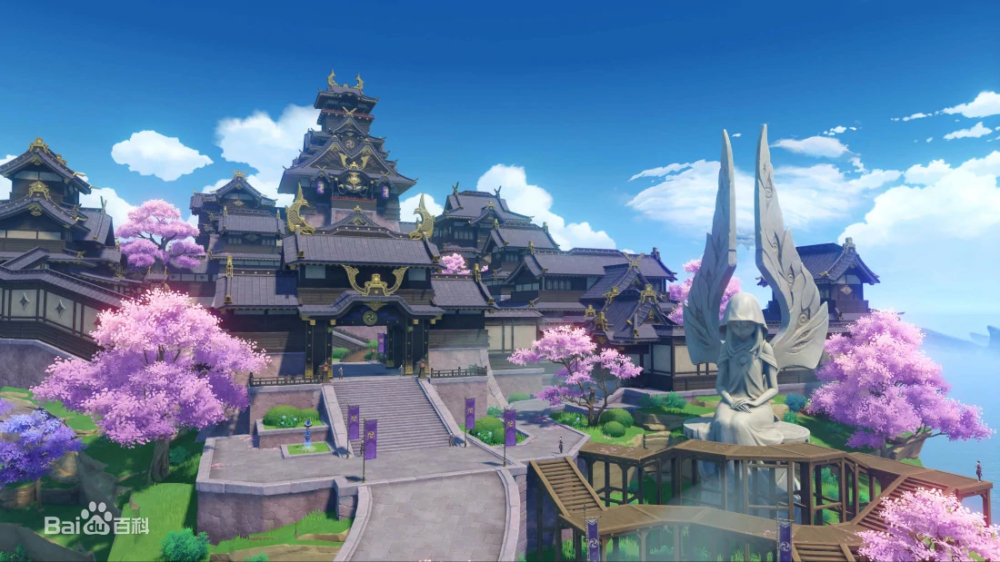

游戏中拥有许多可操控角色，开局的默认角色可以选择男女，此外的角色性别固定。除旅行者外的角色，可以通过剧情、祈愿和活动获取。如安柏是游戏中除主角外，玩家可通过剧情激活的第一个角色。大部分角色都需要通过祈愿获取，祈愿分为常驻祈愿和活动祈愿，祈愿需要消耗相遇之缘或纠缠之缘。
游戏中的角色拥有体力值的设定，在飞行、奔跑、游泳和蓄力攻击（除弓箭角色外）会消耗，体力为0时会使角色进入步行（奔跑）、坠落（滑翔与攀爬）、溺水死亡（游泳）和无法进行蓄力攻击的状态。体力可以通过体力恢复的料理和休息恢复。在动作进行的时候也可以通过呼出面板食用料理进行恢复。
| 突破 | 当角色达到一定等级时，可通过角色突破来提高角色的等级上限。 |
|---|---|
| 天赋 | 不同的角色拥有各自的天赋，赋予他们各式各样的能力与特长。 |
| 命之座 | 每位角色拥有6层命之座，命之座能提升扩展角色天赋。 |
| 类型 | 介绍 |
|---|---|
| 武器 | 游戏中的武器和圣遗物可通过地下城挑战、开宝箱以及任务等方式获取。 |
| 圣遗物 | 圣遗物分为了五种，羽冠、杯皿、时针、花和鸟羽。 |
蒙德
璃月
稻妻
